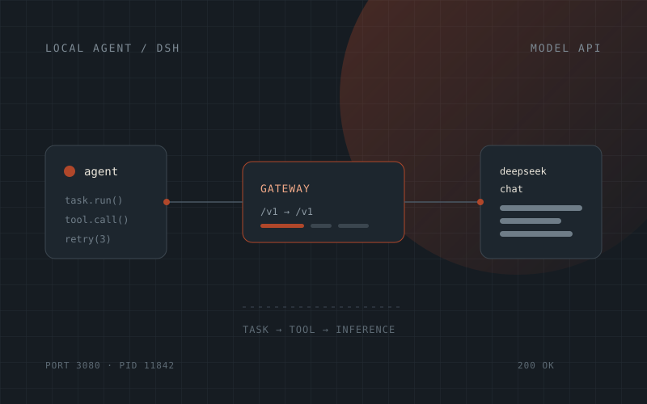

Why run it locally
At first I used an off-the-shelf cloud coding tool. It worked, but two things kept bothering me: every file I touched went out the door, and the model was welded to the tool — switching models meant replacing the whole workflow.
Local deployment buys control: swap the model, inspect the request, keep the logs. The price is that all the glue is yours to write.
What I built
Three pieces: framework, gateway, model.
- Deployed DSH (DeepSeek Harness) locally, giving the coding agent an environment to run in.
- Wrote a protocol-forwarding gateway that converts the agent's requests into the shape the DeepSeek API expects, and converts the answers back.
- Linked task scheduling, tool calls and inference into one chain, then proved it with a small task.
The first version only handled one question and one answer. Adding tool calls is when the real problems showed up: tool arguments are structured, the model's output is structured, and if any layer drops a field, the agent looks like it's thinking while doing nothing at all.
Three things that blocked me
1. The port was already in use
The service wouldn't start, and my first instinct was that the code was wrong. In fact an earlier debugging process hadn't exited and still held the port, so the new process failed silently. Now I check the port before starting, and check the process list before believing an error.
2. Two plugins fighting each other
I installed two plugins with overlapping features. Each worked alone; together they broke. That kind of bug is almost invisible in code review — the only way through is disabling them one at a time and bisecting.
3. "The service started, but nothing is listening"
The classic. The log said startup succeeded, but connections were refused. The protocol adapter had never actually bound the port — the log had reported that the process was alive, not that the service was available. Since then I judge readiness by sending a real request, never by the word "success" in a log.
"Started successfully" and "ready to use" are two different claims. The first is a process state; the second needs a request to come back.
What it can and cannot do
It can run simple multi-step orchestration: given a goal, the agent splits it into steps, calls tools, reads the results and continues. What it can't do is long, open-ended work — once the context grows it drifts, and a failure doesn't roll back.
That's next: checkpoints, so a failed task can resume from the middle instead of starting over.
What I learned
- Debug in layers. Process, then port, then protocol, then business logic. Wrong order wastes hours.
- Write your own logs. The default log tells you it failed, not which layer failed. Instrument the boundaries.
- Minimise the reproduction. One request, one plugin, one argument beats staring at the whole system and guessing.